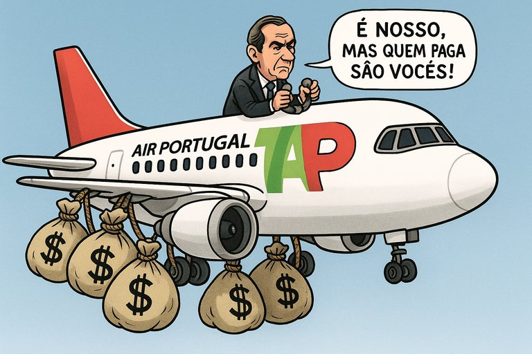

Publicado em 2025-07-10 19:16:28
Portugal continua a tratar a TAP como um talismã patriótico quando convém, e como um fardo “inevitável” quando rebenta a conta.
Agora, com o governo de Montenegro, voltamos ao teatro de sempre:
“Vamos vender… mas manter o controlo do Estado.”
Ora, quem no seu juízo investe bilhões numa empresa com gestão política, contas desequilibradas e um Estado que quer decidir mas não pagar?
Resultado?
Ninguém compra.
Ninguém investe.
E quem paga?
O Zé Povinho.
O reformado. O trabalhador. O contribuinte que nunca andou de avião, mas paga o jet lag alheio.
Esta farsa de “privatização com controlo estatal” não é modelo de negócio. É modelo de encobrimento.
Serve apenas para:
A TAP é símbolo de tudo o que Portugal tem de pior:
E depois admiram-se que os jovens emigram, os reformados passem fome, e o povo descreia da política.
E enquanto se brinca ao “vende-mas-não-vendo”, o país continua a ser o aeroporto onde os sonhos ficam em terra.
Artigo de Francisco Gonçalves e a colaboração de Augustus Veritas
E essa esquerda tolinha vive presa numa cápsula ideológica onde qualquer empresa pública que dê lucro momentâneo é automaticamente símbolo de soberania — mesmo que tenha dado prejuízo crónico por décadas, com injeções bilionárias pagas pelo povo.
Mas esquecem-se de dizer:
Essa “esquerda tolinha” prefere defender bandeiras a resolver problemas.
Confunde lucros pontuais com sustentabilidade.
E continua a acreditar que o Estado deve ser dono de tudo, mas responsável por nada.